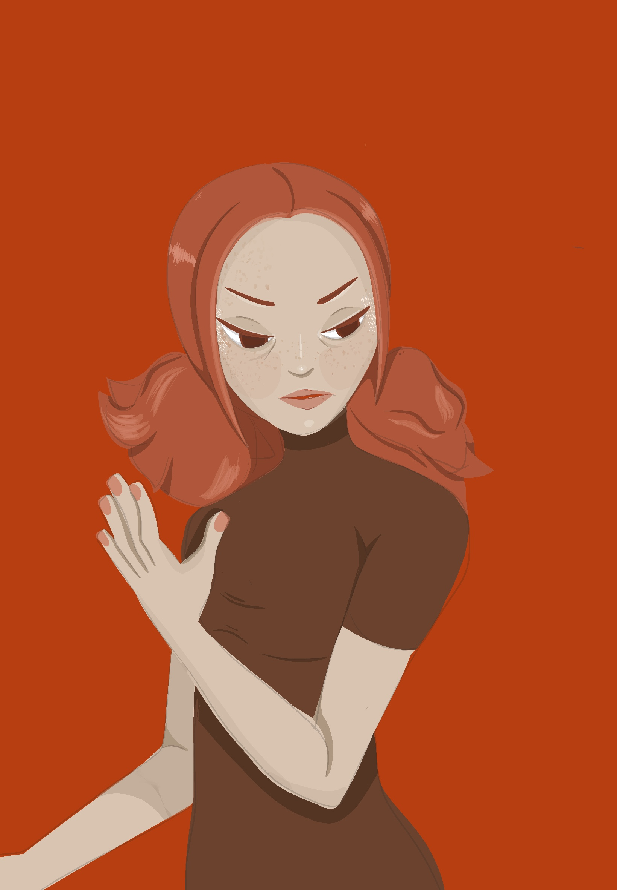

2D Artwork
Original Character: Peach
This is one of my first original character designs. I am fairly new to creating characters, as I only started about three years ago, and this is the first character I created and felt proud of. My inspiration behind this character was wanting to create a personality that is the opposite of mine, in terms of confidence. I created this using Procreate.